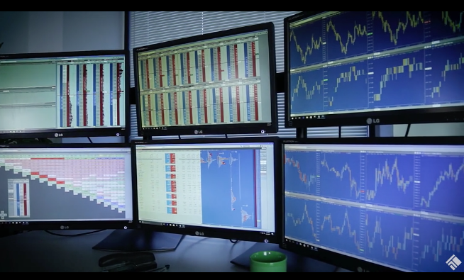

TT Desktop is a front-end application that supports multi-monitor workspaces and provides the highest level of performance for accessing the TT platform. TT Desktop is part of TT’s Software-as-a-Service (SaaS) delivery model and accesses the same back-end of the platform as TT through a browser and TT Mobile. No matter which interface you use to access the TT platform, you use the same login and see all of your orders, fills and positions.

TT Desktop has the same look and feel as TT through a browser, but it does not run in a browser. It is a local application that requires a one-time install. TT Desktop workspaces are comprised of windows, each of which contain a collection of widgets.
TT Desktop has been designed and optimized for desktop setups with multiple monitors. Users may create large, complex workspaces with multiple windows arranged across multiple monitors. Its multi-processor design allows TT Desktop to consume prices at a faster rate and provide a great user experience with no degradation in performance.